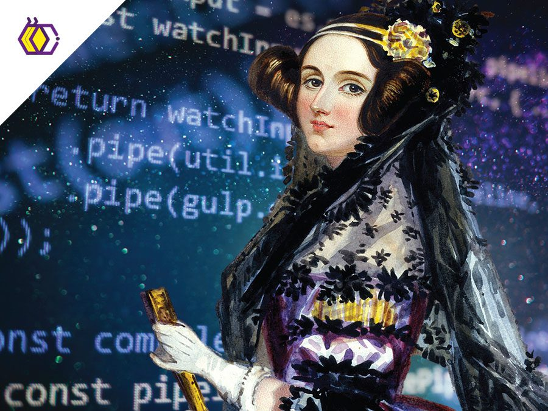

Alan Turing foi um matemático britânico genial, considerado o pai da ciência da computação, que desenvolveu a Máquina de Turing (base teórica dos computadores), o Teste de Turing (para inteligência artificial) e foi crucial na Segunda Guerra Mundial ao decifrar códigos alemães, como o da máquina Enigma, mas foi perseguido e condenado por sua homossexualidade, falecendo tragicamente.

Ada Lovelace (1815–1852) foi uma matemática e escritora britânica, reconhecida como a primeira programadora da história. Ela criou o primeiro algoritmo para a Máquina Analítica de Charles Babbage, prevendo que computadores poderiam ir além de cálculos e criar música ou arte. Filha do poeta Lord Byron, uniu poesia e matemática, sendo uma visionária da computação
Charles Babbage (1791–1871) foi um matemático, filósofo e engenheiro mecânico britânico, conhecido como o "pai do computador". Ele projetou as primeiras calculadoras mecânicas automáticas, a Máquina Diferencial e a Máquina Analítica. Suas invenções introduziram conceitos modernos como memória, entrada por cartões perfurados e processamento, lançando as bases da computação.